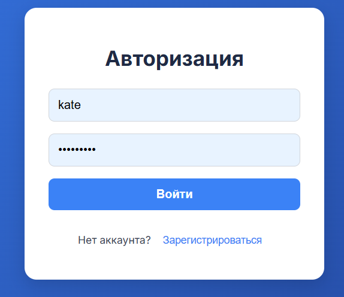
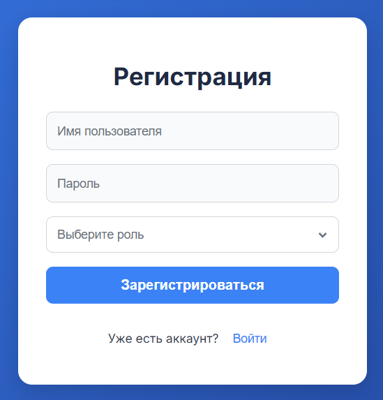
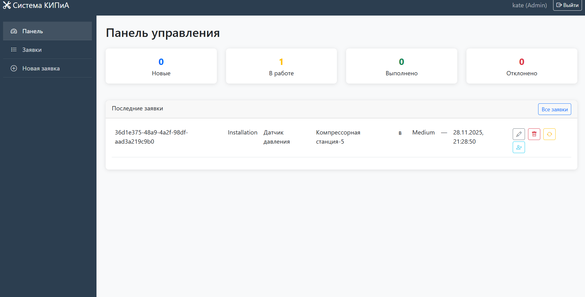

Авторизация в системе

При запуске приложения открывается экран авторизации. Для входа требуется:
- Ввести имя пользователя
- Ввести пароль
- Нажать кнопку «Войти»
Если учётной записи ещё нет — нажмите «Зарегистрироваться» для перехода к форме регистрации.
Регистрация нового пользователя

После нажатия кнопки «Зарегистрироваться» открывается форма для ввода данных:
- Имя (логин)
- Пароль
- Роль — выберите должность (сотрудник, руководитель и т.д.)
Завершите регистрацию нажатием кнопки «Зарегистрировать». Успешная регистрация возвращает на экран авторизации.
Регистрация администратора
Важно: Чтобы зарегистрировать учётную запись с правами администратора, сотрудник должен лично обратиться в технический отдел.
- Техотдел генерирует код подтверждения, который вводится при регистрации.
- После успешной проверки на электронную почту администратора отправляется код, который необходимо ввести для завершения регистрации.
Управление заявками

Интерфейс администратора позволяет:
- ✏️ Редактировать заявки
- 🗑️ Удалять заявки (с подтверждением)
- 📌 Изменять статус заявки (в работе, выполнено, отклонено)
- 👤 Назначать ответственных исполнителей
Все изменения сохраняются в журнале событий.
Как удалить заявку

Для удаления заявки администратору необходимо:
- Нажать на значок 🗑️ (корзина) рядом с заявкой.
- В диалоговом окне подтвердить удаление.
- После подтверждения заявка окончательно удаляется из системы.
История всех обращений

В этом разделе представлен реестр всех поданных обращений. Доступны фильтры по дате, статусу и ответственному. Администратор может отслеживать полную историю заявок, а также экспортировать отчёт.
- Поиск по номеру заявки
- Сортировка по приоритету
- Просмотр подробной карточки заявки
Подача новой заявки

Для создания заявки пользователю необходимо заполнить все обязательные поля формы:
- Объект
- Цех
- Техническое устройство
- Оборудование
- Приоритет
- Тип работ
- Описание заявки
После заполнения нажмите кнопку «Отправить заявку». Система автоматически присвоит уникальный номер.
Оповещения на электронную почту

Оповещение о новой заявке автоматически направляется администратору по электронной почте. Кроме того, система уведомлений обеспечивает контроль всех действий пользователей:
- ✉️ Создание заявки → уведомление админу
- ✉️ Изменение статуса заявки → уведомление автору и админу
- ✉️ Назначение ответственного → уведомление исполнителю
- ✉️ Удаление / редактирование → также фиксируется в почтовом журнале
Частые вопросы и решения
Вопрос: Я зарегистрировался, но не могу войти. Что делать?
Ответ: Проверьте правильность имени и пароля (учтите регистр). Если забыли пароль — используйте функцию «Восстановить пароль» на экране авторизации. При повторной проблеме обратитесь в техотдел.
Вопрос: Почему администратор не видит кнопки редактирования/удаления?
Ответ: Убедитесь, что вы вошли именно под учётной записью с ролью «Администратор». Обычные пользователи не имеют прав на управление заявками. Регистрация администратора возможна только через техотдел (см. раздел Особый вход).
Вопрос: При регистрации администратора не приходит код на почту. Что делать?
Ответ: Проверьте папку «Спам», также убедитесь, что электронная почта указана верно. Если проблема повторяется — обратитесь в технический отдел лично, возможно, почтовый сервер заблокировал рассылку.
Вопрос: Можно ли восстановить удалённую заявку?
Ответ: Нет, удаление заявки окончательное. Система предупреждает перед подтверждением. Рекомендуется перед удалением экспортировать данные заявки из раздела «Все заявки».
Вопрос: Где найти историю изменений по заявке?
Ответ: Откройте карточку заявки — в ней присутствует вкладка «Журнал действий», где отображены все изменения статуса, назначения и комментарии.